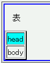

相対配置した要素の子孫にtable要素があるとき、そのテーブルの行グループ要素（thead, tfoot, tbody）に指定した背景がテーブルの外部にはみ出して表示されることがある。
<div style="position:relative; border:2px solid blue;"> <p>表</p> <table border="2"> <thead style="background:aqua;"> <tr><td>head</td></tr> </thead> <tbody> <tr><td>body</td></tr> </tbody> </table> </div>
表
| head |
| body |
ウィンドウのサイズを変えると、背景がはみ出している部分が変化します。
Netscape7.1標準モード
WinIE6.0標準モード
行グループ要素を相対配置することでこの不具合を回避できます。
<div style="position:relative; border:2px solid blue;"> <p>表</p> <table border="2"> <thead style="background:aqua; position:relative;"> <tr><td>head</td></tr> </thead> <tbody> <tr><td>body</td></tr> </tbody> </table> </div>
表
| head |
| body |
WinIE6.0の標準モードと互換モードで不具合の発生を確認しました。